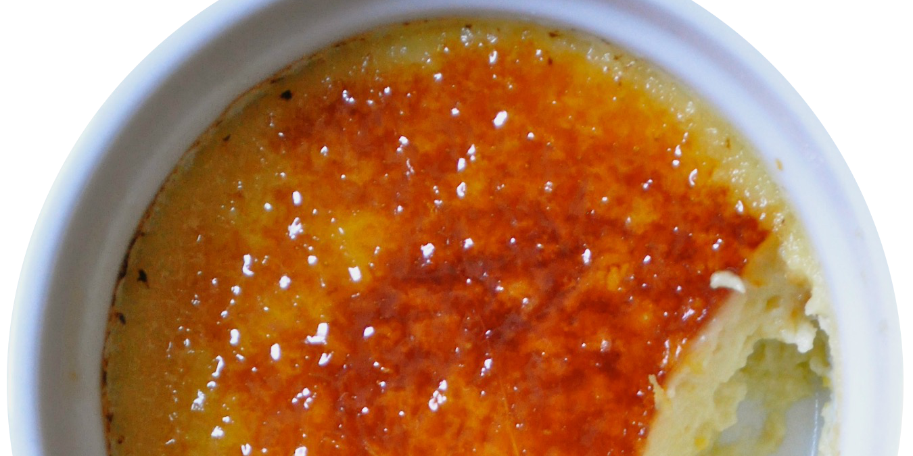

CRÈME BRÛLÉERIE
Everyone needs a little dessert.

Create a classic crème brûlée
You will need:
- 500ml full fat cream
- 6 egg yolks
- 100g sugar
- 6 ramekins, or tea cups if you want to be cutesy
Prep time: 10 minutes
Cooking time: 60 minutes
Cooling time: minimum 1 hour
Directions:
- Preheat your oven to 150°C.
- Place the yolks and sugar in a bowl, and whisk together. Don't let it stand without whisking otherwise lumps will form. Ew. (The sugar will start cooking the yolks! Science is weird.
- Heat the cream in a saucepan over medium heat, and remove just before it boils. (There will be steam and a light swirly movement in the pan.)
- Whisk the hot cream into the egg mix little by little.
- Fill your ramekins with the mixture and place them on a deep-ish oven tray, then slide the tray into the oven.
- Once the tray is in the oven, fill it with lukewarm water until the ramekins are submerged halfway. If you’re not even a little bit clumsy, you can add the water to the tray before putting it in the oven.
- Bake for approximately 60mins or until the crème brûlée mix has a wobbly consistency. Give the ramekins a little tap to test the wobbliness. Liquid is a nah. We’re going for a “firm jello” feel here.
- Take it out of the water bath and place it in the fridge until cold. This could take approximately 1 hour. These babies without the crusty sugar top can last in the fridge for a couple of days, so feel free to make one for every day of the week.
And now for the grand finale...
Just before serving, remove the ramekins from the fridge and set them on a work surface. Working with one custard at a time, sprinkle 1/2 to 1 tsp. of sugar over each one—the more sugar, the thicker the crust. You may need to tilt and tap the ramekin to even out the layer of sugar. Wipe any sugar off the rim of the ramekin. Hold the torch flame 3-5 cm from the top of the custard and slowly glide it back and forth over the surface until the sugar melts and turns a deep golden brown. Allow the sugar to cool and harden for a few minutes, and then serve immediately, before the sugar softens and gets sticky.
PRO TIP: These little beauties are best enjoyed when served ice cold. ♥
Submit your crème brûlée creation here.